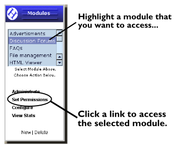

|
Modules
All of the current modules that are installed for your site are located on the left side of the page under the modules sections. By selecting a module on the left side and choosing one of the buttons below, you can administrate your site.
|  |
|
Site Menu The most common activities are in the "site" menu to the left. From there you can add new HTML pages, review users & groups, and get usage graphs of your site. The "view site" feature is very handy for testing out changes to your site. Clicking it will bring your site into this frame and allow you to quickly make adjustments without having two browser windows open. Don't forget to add a menu link in the menu module after you create a new HTML page. | |